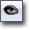
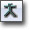
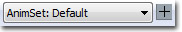
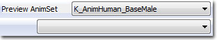
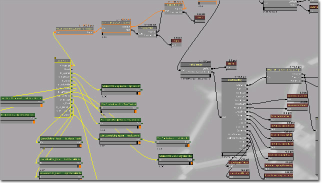
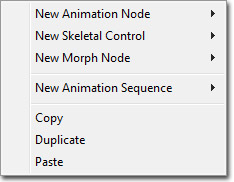

UDN
Search public documentation:
AnimTreeEditorUserGuideCH
English Translation
日本語訳
한국어
Interested in the Unreal Engine?
Visit the Unreal Technology site.
Looking for jobs and company info?
Check out the Epic games site.
Questions about support via UDN?
Contact the UDN Staff
日本語訳
한국어
Interested in the Unreal Engine?
Visit the Unreal Technology site.
Looking for jobs and company info?
Check out the Epic games site.
Questions about support via UDN?
Contact the UDN Staff
UE3主页 > 虚幻编辑和工具 >动画树编辑器用户指南
UE3主页 >动画 >动画树编辑器用户指南
UE3 Home > 动画设计师 > 动画树编辑器用户指南
UE3 主页 > 过场动画制作人员 > 动画树编辑器用户指南
UE3主页 >动画 >动画树编辑器用户指南
UE3 Home > 动画设计师 > 动画树编辑器用户指南
UE3 主页 > 过场动画制作人员 > 动画树编辑器用户指南
动画树编辑器用户指南
概述
打开动画树编辑器
动画树编辑器界面

- 菜单条
- 工具条
- 预览面板 - 在骨架网格物体上预览动画。
- Graph Pane(图表面板) - 构成动画树的节点。
- 属性面板 - 网格物体、动画集或动画序列的属性。
菜单条
窗口
- Preview(预览) - 切换预览面板的显示状态。
- Properties(属性) - 切换属性面板的显示状态。
工具条
| 图标 | 描述 |
|---|---|
| 停止预览面板中的动画播放。 | |
|  | 仅显示当前选中节点的结果作为预览面板中渲染输出。 |
 | 切换Graph Pane(图表面板)中节点权重的显示状态。 |
|  | 切换预览面板中预览网格物体的骨架的显示状态。 |
 | 切换预览面板中预览网格物体的骨骼的骨骼名称的显示状态。 |
 | 使得预览面板在带光照渲染视图和线框视图间切换。 |
 | 切换预览面板中预览地面网格物体的显示状态。在预览类似于脚步放置位置的某些效果时这可能是有用的。 |
 | 选择要预览的网格物体，并允许您使用当前的选择作为基础来添加新的预览网格物体。 |
|  | 选择要预览的动画集，并允许您使用当前的选择作为基础来添加新的预览动画集。 |
 | 选择要预览的插槽，并允许您使用当前的选择作为基础来添加新的要预览的插槽。 |
|  |
预览面板
 预览面板显示了应用到预览网格物体上的动画树的渲染视图(或者可选的线框视图)。这允许您可以快速并精确地获得动画树效果的反馈，并且可以在动画树编辑器中查看它在游戏中的效果。
导航预览面板的方式和大部分其它编辑器的预览窗口类似。左击并拖拽鼠标将会围绕预览网格物体旋转相机。右击并拖拽将会沿着局部X-轴移动相机，可以有效地进行缩放。点击鼠标中间键并拖拽将会沿着局部YZ-平面移动相机。
预览面板显示了应用到预览网格物体上的动画树的渲染视图(或者可选的线框视图)。这允许您可以快速并精确地获得动画树效果的反馈，并且可以在动画树编辑器中查看它在游戏中的效果。
导航预览面板的方式和大部分其它编辑器的预览窗口类似。左击并拖拽鼠标将会围绕预览网格物体旋转相机。右击并拖拽将会沿着局部X-轴移动相机，可以有效地进行缩放。点击鼠标中间键并拖拽将会沿着局部YZ-平面移动相机。
图表面板

图表(Graph Pane)是基于节点的工作区，和材质编辑器或Kismet类似。在这里，您可以向动画树中添加新的节点，将这些节点连接到一起或者将它连接到基础动画树节点上来创建新的动画行为。AnimTree(动画树)节点
AnimTree节点是动画树的根节点。最初，它有两个输入端： Animation (动画)和Morph（顶点变形）。这些输入端允许您创建网络来控制应用到分配了动画树的网格物体上的骨架动画和顶点变形目标。AnimTree节点也可以具有其他额外添加输入端，从而允许使用骨架控制器控制骨架网格物体中的骨骼。这可以通过右击AnimTree节点并选择 Add SkelControl Chain(添加骨架控制链) 来完成。这时，将会弹出一个对话框，让您选择要控制的骨骼。一旦选中了一根骨骼，将会在AnimTree上出现一个具有该骨骼名称的新的输入端。 Animation输入端所具有的网络由各种Animation(动画)和连接到它上面的Animation Sequence（动画序列）节点构成。Morph(顶点变形)输入端所具有的网络由各种连接到其上面的Morph（顶点变形）节点构成。各种SkelControl骨骼输入端所具有的网络由各种连接到它们上面的Skeletal Control(骨架控制器)节点构成。每种类型的输入端和节点都有不同的颜色，所以您可以快速地知道您正在处理的类型。Animation（动画）输入端和Animation（动画）节点是黄色，而Animation Sequence(动画序列)节点是暗红色。Morph(顶点变形)输入端和节点时紫色。SkelControl输入端和 Skeletal Control 节点是绿色。 *AnimTree Properties(动画树属性)- AnimGroups(动画组) - 用于同步动画的动画组列表。
- Group Name(组名称) - 动画组的唯一名称。
- Rate Scale(速率缩放比例) - 这个动画组的播放速度乘数。
- Compose Pre Pass Bone Names(构成预先渲染时的骨骼名称) -
- Compose Post Pass Bone Names(构成滞后遍渲染时的骨骼名称) -
- Preview Mesh List(预览网格物体列表) - 用于和这个动画树结合使用以便在预览面板中进行预览的骨架网格物体的列表。
- Display Name(显示名称) - 在工具条的预览网格物体列表中显示的可读名称。
- Preview Skel Mesh(预览骨架网格物体) - 这个预览网格物体的骨架网格物体资源。
- Preview Morph Sets(预览顶点变形目标集) - 要和这个预览网格物体结合使用的顶点变形目标集。
- Preview Socket List(预览插槽列表) - 属于要在预览面板中预览的网格物体的插槽列表。
- Display Name(显示名称) - 在工具条的预览插槽列表中显示的可读名称。
- Socket Name(插槽名称) - 这个预览插槽的预览网格物体上的插槽的名称。
- Preview Skel Mesh(预览骨架网格物体) - 在预览面板中要附加到这个预览插槽上的骨架网格物体资源。
- Preview Static Mesh(预览静态网格物体) - 在预览面板中要附加到预览插槽上的静态网格物体资源。
- Preview Anim Set List(预览动画集列表) - 用于和预览网格物体结合使用的动画集列表，以便在预览面板中预览。
- Display Name(显示名称) - 这个预览动画集的可读的显示名称。
- Preview Anim Sets(预览动画集) - 这个预览动画集所使用的动画集资源的列表。
关联菜单

图表面板的关联菜单包含了添加各种类型新节点，以及复制、粘帖、克隆选中节点的功能。属性面板
 属性面板显示了图表面板中当前选中的节点的属性。在功能方面，它和虚幻编辑器中其他地方使用的属性窗口一样。
属性面板显示了图表面板中当前选中的节点的属性。在功能方面，它和虚幻编辑器中其他地方使用的属性窗口一样。
控制
鼠标控制
Preview Pane(预览面板)- LMB + Drag(LMB+拖拽) - 旋转相机使它围绕网格物体转动。
- RMB + Drag(RMB+拖拽) - 沿着本地坐标轴X移动相机，来回缩放。
- MMB + Drag(MMB+拖拽) - 沿着本地YZ平面移动相机。
键盘控制
- L + Mouse Move(L+移动鼠标) - 在预览面板中旋转预览光照。
热键
- Ctrl + W - 克隆图表面板中当前选中的节点。
网格物体预览
 您可以为以下类别创建多个元素： Preview Mesh(预览网格物体)和Morph Weights（变形权重）、AnimSets (动画集)和Sockets(插槽)。然后您可以在工具条中在它们这些之间进行迅速地切换。
点击列表方框旁边的小
您可以为以下类别创建多个元素： Preview Mesh(预览网格物体)和Morph Weights（变形权重）、AnimSets (动画集)和Sockets(插槽)。然后您可以在工具条中在它们这些之间进行迅速地切换。
点击列表方框旁边的小  图标，允许您通过复制当前选项来创建一个新项。当您有10个以上动画集并且您想通过重新使用所有的这些动画集或者其中是一部分来创建新项时，这个功能是有用的。
图标，允许您通过复制当前选项来创建一个新项。当您有10个以上动画集并且您想通过重新使用所有的这些动画集或者其中是一部分来创建新项时，这个功能是有用的。
添加节点